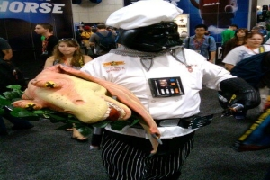
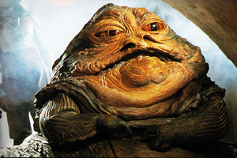
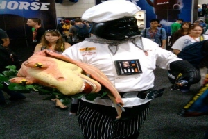
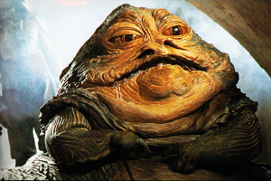

Simples e maravilhoso.
Nosso amado mestre Yoda preparou uma iguaria de uma maravilhosa omelete simples e estremamente deliciosa comentou um dos jurados."Eu fazer comida boa.",comentou Yoda logo após decisão dos jurados ,o imunizado desta semana é Yoda.
Que delicia!.
Agora só da ele Darth Vader ataca de chef de cozinha e surpreende a todos com uma receita bem exotica e diferente cabeça de Jar Jar Binks no vapor, quem provou a iguaria adorou O miolo pequeno e sem sabor ,mas a lingua uma delicia.Sobre o imcidente de Jabba Vader não quiz fazer comentarios.
Fome de Rancor.
O eliminado da semana passada Jabba Hutt comenta sobre atitude duvidosa com o juiz e renomado chef de cozinha Dexter Jettster que após fazer duras criticas ao prato de Jabba o mesmo em um ataque de furia arranca um braço do chef e come na frente do auditório "Ele tinha quatro braços,agora tem três". Comentou Jabba rindo.